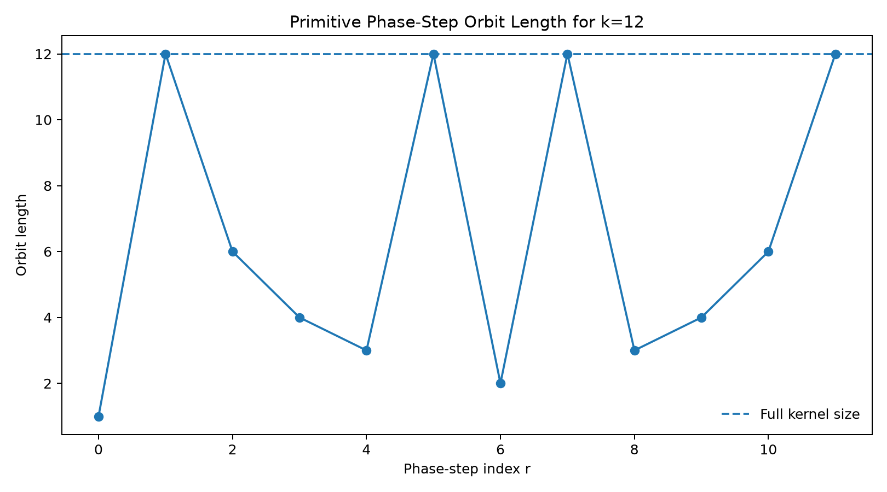
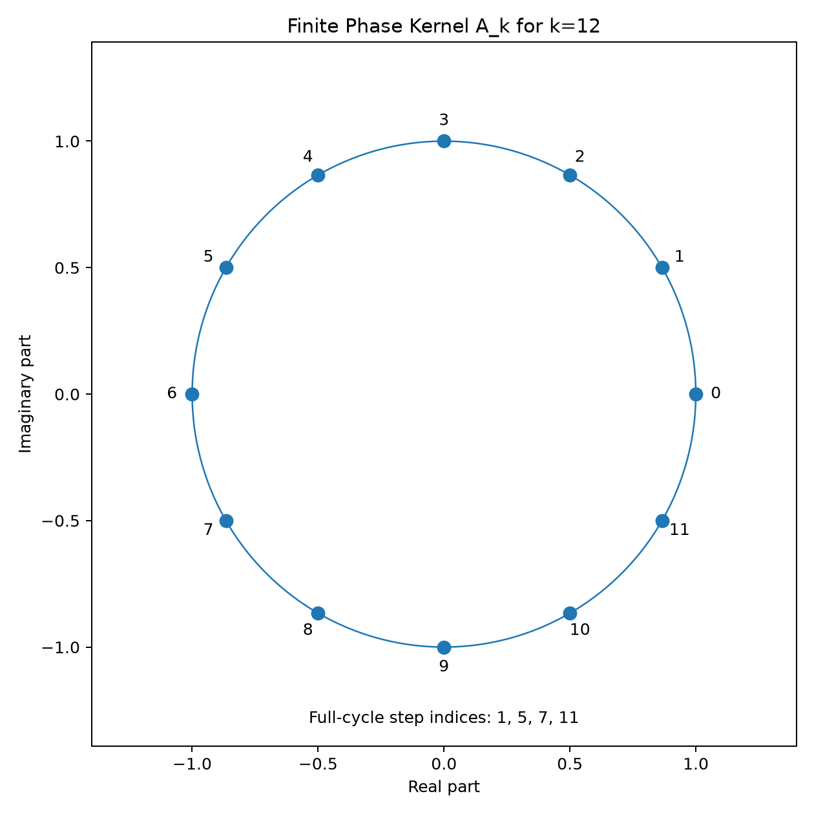
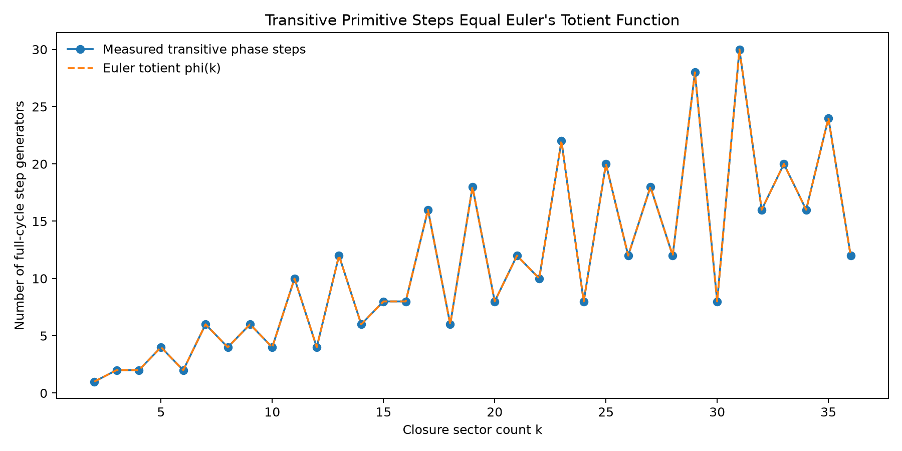

Entry 07
Primitive EDF Phase Evolution and the Traversal Theorem
Entries 05 and 06 established that a resolved cyclic phase operator together with a cyclic traversal operator generates the finite Weyl algebra and therefore a complete operator space of dimension \(k^2\).
entry_07
Outputs folder: output
Figures
Click any figure to enlarge it.

diagnostic_orbit_length.png
{kind=link}

diagnostic_phase_kernel.png
{kind=link}

transitive_steps_vs_totient.png
{kind=link}
Tables
Embedded previews of CSV/TSV outputs with links to the full raw files.
| k | r | delta_phi_over_2pi | gcd_k_r | orbit_length | cycle_count | transitive_full_cycle | kernel_preservation_error | … |
|---|---|---|---|---|---|---|---|---|
| 12 | 0 | 0.0 | 12 | 1 | 12 | False | 0.0 | … |
| 12 | 1 | 0.08333333333333333 | 1 | 12 | 1 | True | 6.066371422017442e-16 | … |
| 12 | 2 | 0.16666666666666666 | 2 | 6 | 2 | False | 7.550332863779066e-16 | … |
| 12 | 3 | 0.25 | 3 | 4 | 3 | False | 4.965068306494546e-16 | … |
| 12 | 4 | 0.3333333333333333 | 4 | 3 | 4 | False | 6.950990486734926e-16 | … |
| 12 | 5 | 0.4166666666666667 | 1 | 12 | 1 | True | 4.965068306494546e-16 | … |
Preview only — columns truncated, rows truncated. Open full file
| k | r | delta_phi_over_2pi | gcd_k_r | orbit_length | cycle_count | transitive_full_cycle | kernel_preservation_error | … |
|---|---|---|---|---|---|---|---|---|
| 2 | 0 | 0.0 | 2 | 1 | 2 | False | 0.0 | … |
| 2 | 1 | 0.5 | 1 | 2 | 1 | True | 2.4492935982947064e-16 | … |
| 3 | 0 | 0.0 | 3 | 1 | 3 | False | 0.0 | … |
| 3 | 1 | 0.3333333333333333 | 1 | 3 | 1 | True | 6.918966297196768e-16 | … |
| 3 | 2 | 0.6666666666666666 | 1 | 3 | 1 | True | 7.850462293418876e-16 | … |
| 4 | 0 | 0.0 | 4 | 1 | 4 | False | 0.0 | … |
Preview only — columns truncated, rows truncated. Open full file
| k | measured_transitive_steps | euler_totient_phi_k | agreement | fraction_of_nonzero_steps_transitive |
|---|---|---|---|---|
| 2 | 1 | 1 | True | 1.0 |
| 3 | 2 | 2 | True | 1.0 |
| 4 | 2 | 2 | True | 0.6666666666666666 |
| 5 | 4 | 4 | True | 1.0 |
| 6 | 2 | 2 | True | 0.4 |
| 7 | 6 | 6 | True | 1.0 |
Preview only — rows truncated. Open full file
Source files
Theoretical notes
Data files
No files in this category.
Other artifacts
No files in this category.